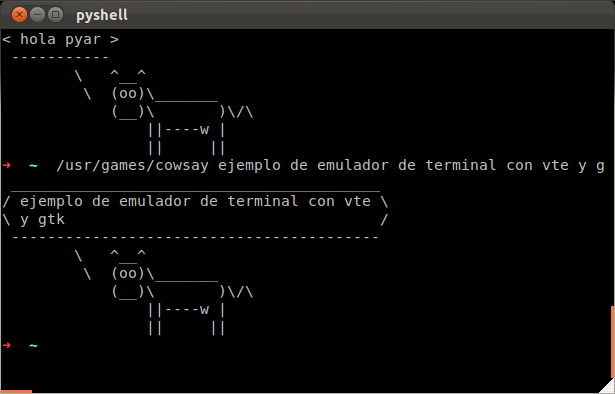

Un ejemplo sobre cómo hacer una terminal visual al estilo gnome-terminal
import gtk import vte window = gtk.Window() window.set_title("pyshell") window.set_default_size(640, 480) scroll = gtk.ScrolledWindow() shell = vte.Terminal() shell.connect("child-exited", gtk.main_quit) shell.fork_command() scroll.add(shell) window.add(scroll) window.connect('delete-event', gtk.main_quit) window.show_all() gtk.main()